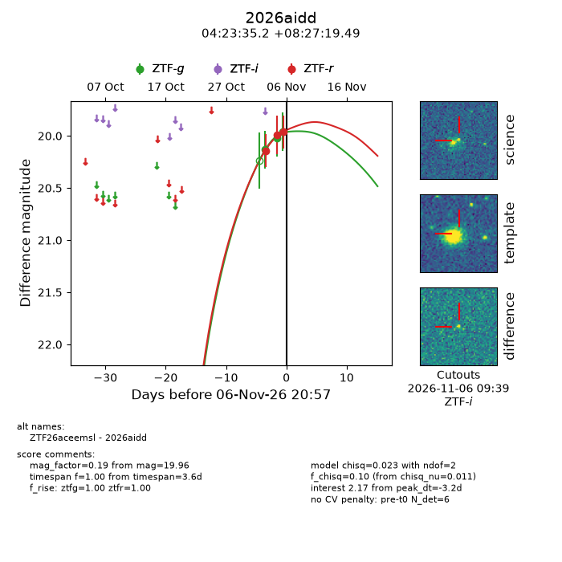
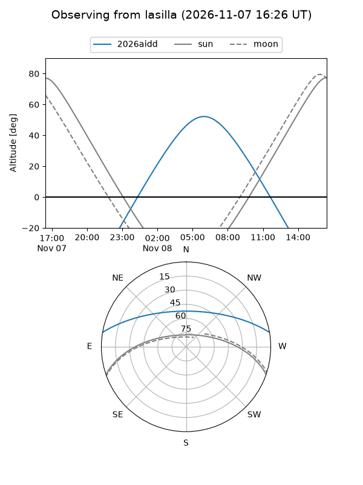
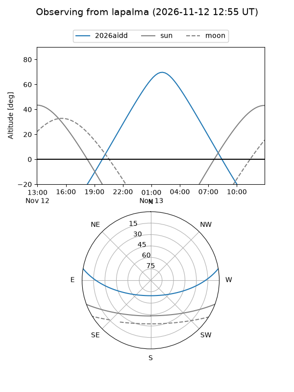
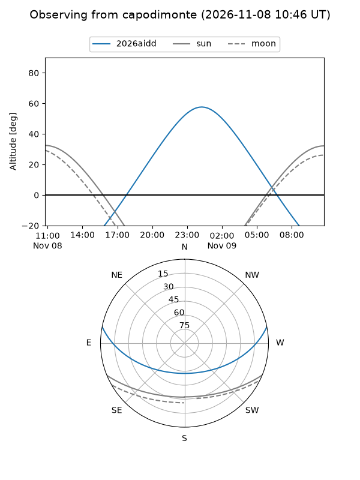
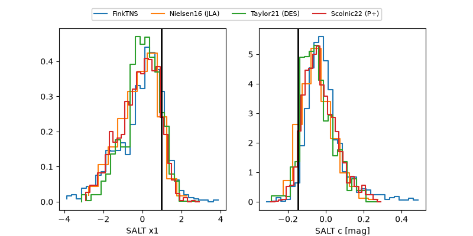

2026aidd
Target 2026aidd at 2026-11-06 20:59
Aliases and brokers:
FINK-ZTF: ztf.fink-portal.org/ZTF26aceemsl
Lasair-ZTF: lasair-ztf.lsst.ac.uk/objects/ZTF26aceemsl
ALeRCE-ZTF: alerce.online/object/ZTF26aceemsl
YSE-PZ: ziggy.ucolick.org/yse/transient_detail/2026aidd
TNS name: wis-tns.org/object/2026aidd
Direct TNS query: direct search
alt names
ZTF26aceemsl (ztf,fink_ztf)
2026aidd (tns,yse)
Coordinates:
equatorial (ra, dec) = 65.8966,+8.45541
equatorial (HMS+DMS) = 04:23:35.19,+08:27:19.49
galactic (l, b) = (185.9684,-27.53450)
Flags:
peak dt: -3.2
Photometry:
last ztfg=19.96, ztfr=19.96
3 ztfg, 3 ztfr detections
Lightcurve

Visibility



Additional plots
